在学习和工作当中，休息时喝上一杯热咖啡或热茶，感觉心灵都得到了治愈。我们对温度的变化非常敏感，可以说一边喝一边就能感受到咖啡温度的变化。
让我们看看刚泡好的咖啡（90℃）的温度变化。非常温热的咖啡温度会随着时间的推移逐渐下降到接近室温。
用算式来表现这种变化就是下面这样。
1分钟后的温度（T）=室温+（咖啡的温度-室温）×e-0.5t
当室温为25℃时，T=25+（90-25）×e-0.5t
=25+65×e-0.5t 。
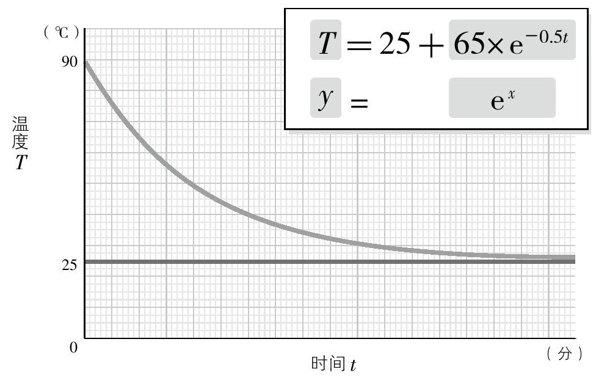
90℃咖啡的温度变化（室温25℃）
这里希望大家注意的是，在温度和时间的关系式中有e这个定数。
这是自然对数（log）的底数，又叫作自然常数，是数学中很重要的一个基本定数。e（e=2.718281828459045……）是一个无理数。
这个使用了e的函数“y=ex ”称为指数函数。在表达咖啡温度变化的算式中，将y换成T，量ex 换成65×e-0.5t 就得到了另一个指数函数。
像这样用指数函数来表达自然现象和社会现象等的关系可谓非常常见，如细菌的增殖、细胞的分裂、复利的本金与利息合计等。
为什么咖啡温度的变化会以这样的函数呈现呢？将这个理由简单地解释一下。
算式让我们知道的是温度下降的瞬间，咖啡的温度和室温（外面的空气）的温度差的比例。
比如，我们可以分为冬季（气温10℃）环境和夏季（气温35℃）环境。
冬季：10+（90-10）×e-0.5t =10+80×e-0.5t
夏季：35+（90-35）×e-0.5t =35+55×e-0.5t
五分钟后（t=5）将数值加以比较，冬天约为16.6℃，夏天约为39.5℃。
也就是说，即使是同样温度的咖啡，当其与气温的温度差很大时，温度就会渐渐下降，温度差较小时，咖啡“不会很快变冷，还可以尽情享受美味”。
“水要变凉了，快去洗澡。”
我小时候常听妈妈这么说，其实这就是前面叙述的问题。煮沸的洗澡水转眼就会变凉，这是妈妈从经验中得知的。
我不知道刚才出现的定数e的符号是怎样来的，不过这跟发现它的数学家莱昂哈德·欧拉（Euler）名字的首字母相同。将自然现象背后隐藏的数学理论进行完美解读，并将它们转化为眼前的数字，欧拉一定感觉到特别惊讶。
怀着对自然最大的敬意及对完成工作的荣誉感，欧拉可能为其冠上了自己名字的首字母“e”。
拓扑学是研究图形和空间性质的几何学，其中也包括“注重物体之间联系方法”的新领域“拓扑几何学”。
所谓“注重物体之间的联系方法”，就是说看待一个图形时，其连接的线可以伸缩，也可以弯折。
如果这样想的话，那么下图中的三角形、正方形和圆形都可以看作同样的东西，多么不可思议啊。
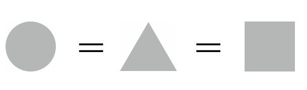
全部相同？！
拓扑几何学的思维方式并不是要将图形的形状和位置作为“固定的条件”抓住不放，另外，它现在已然成为某些新领域孕育的根基。这里为大家介绍几个理论。
一个是“扭结理论”。“扭结理论”是研究如何用数学手段来表达一根绳子结成一个圈后的绳结的学问。
近年来，这种思维方式在物理学和生物学中都得到了应用，用以研究DNA结成的“扭结”等。
请看下面的图，用绳子系出的图形跟DNA这一生命的秘密有着关联。大家觉不觉得这既神奇，又神秘呢？
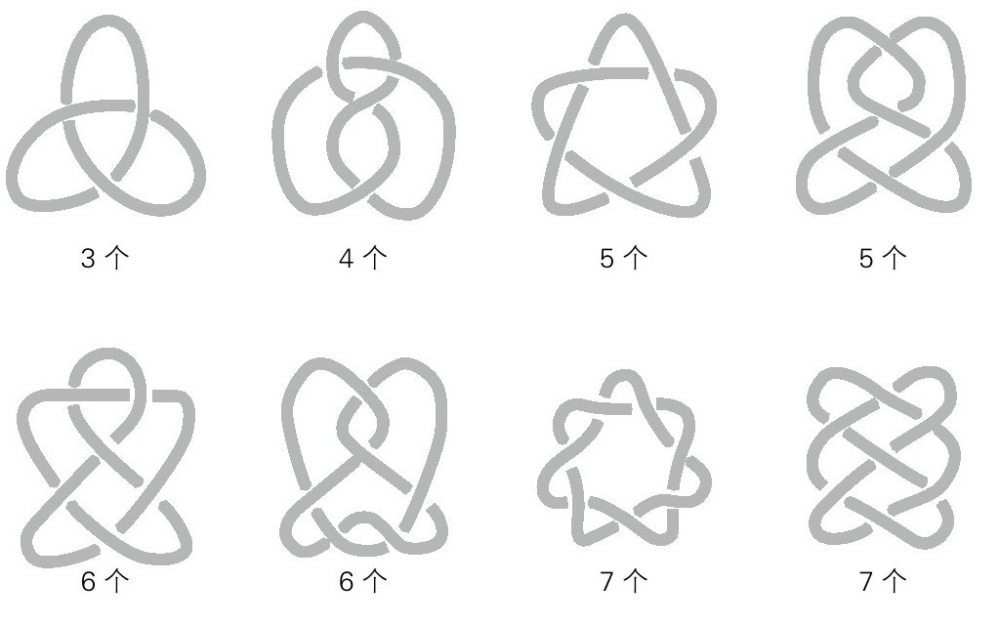
扭结有几个？——扭结理论
另一个是“图表理论”。“图表理论”研究的是由点的集合和线的集合构成的“图表的性质”。
由点和线构成的图形叫作图表，但现在的图表理论被用于电路、电脑网络、道路交通网等。
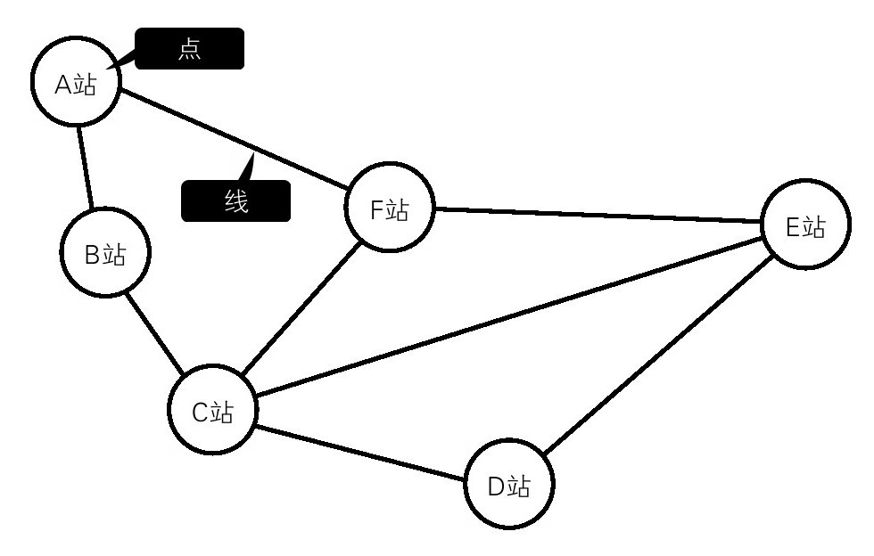
铁道路线图也属于图表理论
运用数学模型来进行研究。
现代社会中，没有这些技术的生活简直难以想象。可以说，“拓扑几何学”和我们的生活密切相关。
将话题转移到数学世界。德国数学家波恩哈德·黎曼（1826～1866）提出了“流形”的概念。所谓流形就是无论哪个点，只要限定在它的周围，它就会变成跟普通空间一样的图形。
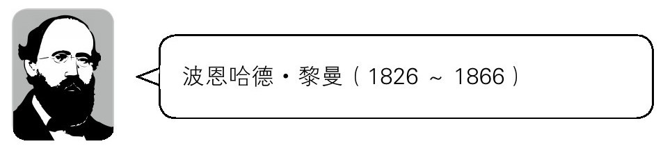
地球的表面是一个平面，所以是一个二维流形。用同样的思维来思考，就可以把宇宙空间（不能考虑时间）当作三维流形。
作为三维流形的宇宙是什么形状呢？
这个巨大的疑问被抛出来后，法国数学家亨利·庞加莱（1854～1912）对此做出了猜想。
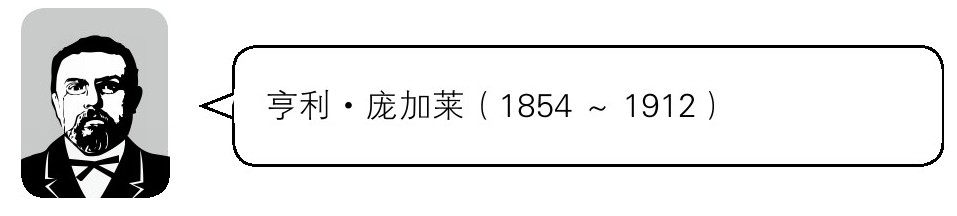
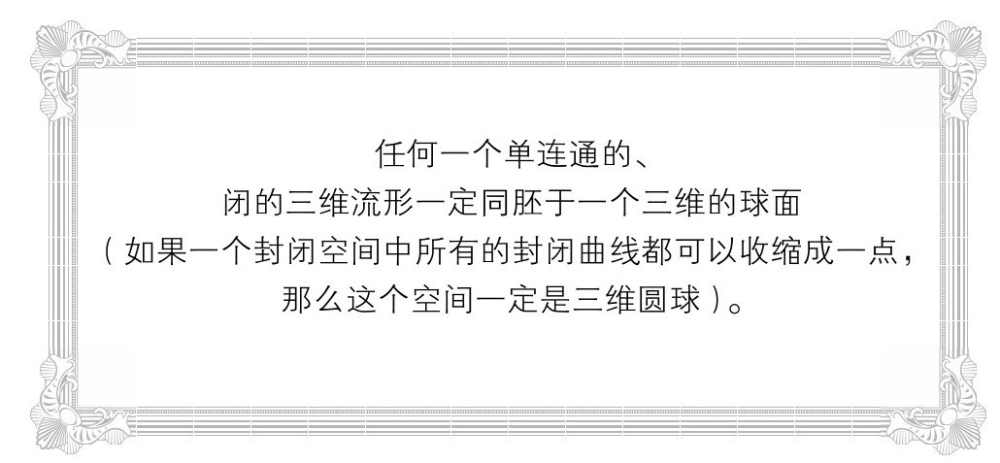
庞加莱猜想
1904年他提出了“任何一个单连通的、闭的三维流形一定同胚于一个三维的球面（如果一个封闭空间中所有的封闭曲线都可以收缩成一点，那么这个空间一定是三维圆球）”的猜想。也就是说，“没有环面洞穴的宇宙应该是圆球形的吧”。这就是著名的难题“庞加莱猜想”。
关于拓扑几何学的“庞加莱猜想”中有一种叫作“闭曲面”的思考方式。“闭曲面”就是指“闭合的、内部被空间的一部分完全包裹起来的曲面”。比如，麦比乌斯之环等环形的圆形曲面就叫作“闭曲面”。
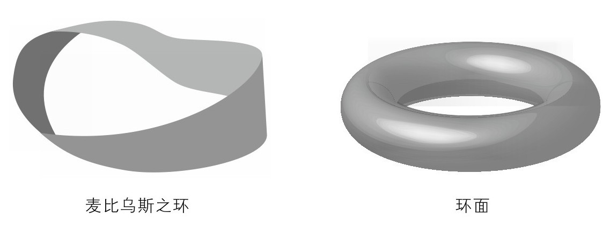
闭曲面
这个难题在大约一百年后的2002年，由俄罗斯数学家格里高利·佩雷尔曼（1966～）用“一切三维流形都可以用数学分类”的形式解决了。
像这样，“拓扑几何学（拓扑学）”以数学为起点，在各种领域内都得到了发展和应用。
拓扑几何学是一门神奇的学问，可以说是人类对于新的可能性而进行秘密研究的全新领域。
检修孔、轮胎、球、钱，我们将“圆”这种形状的便利与美应用到了日常生活中。我们每天都会看到“圆”。
而圆周率π就是直径与圆周长的比。
圆周率是一个神秘的谜一般的数字。从古希腊的阿基米德开始，中国的祖冲之、意大利的斐波那契、日本的关孝和、印度的拉玛努金等，古往今来国内外的数学家和科学家们都为圆周率而着迷，不断地对这个数字进行探索。
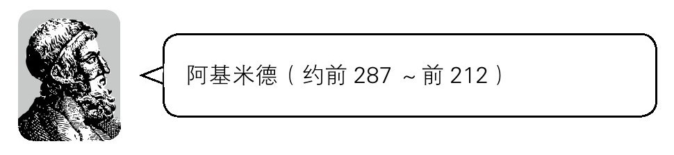
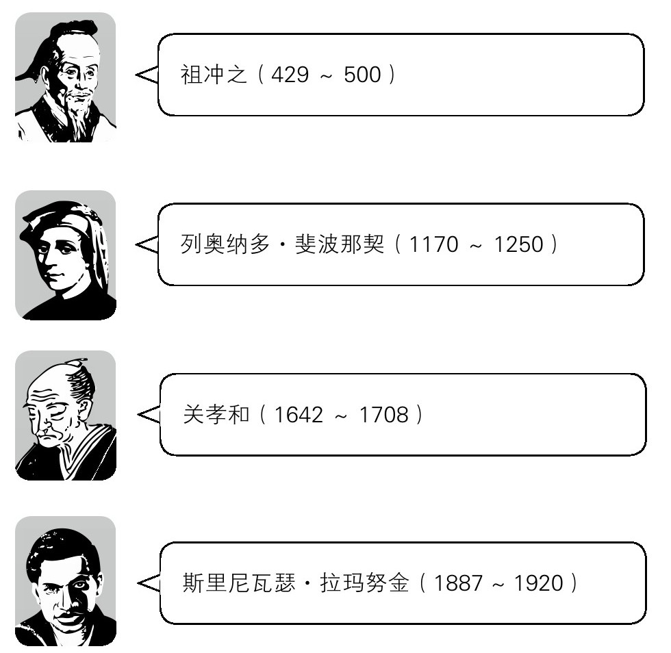
那么就让我们用求圆周长的公式“圆周=2π×半径”，来挑战圆周率π不可思议的问答题吧。
有一对父子，爸爸给儿子出了一道数学问答题。
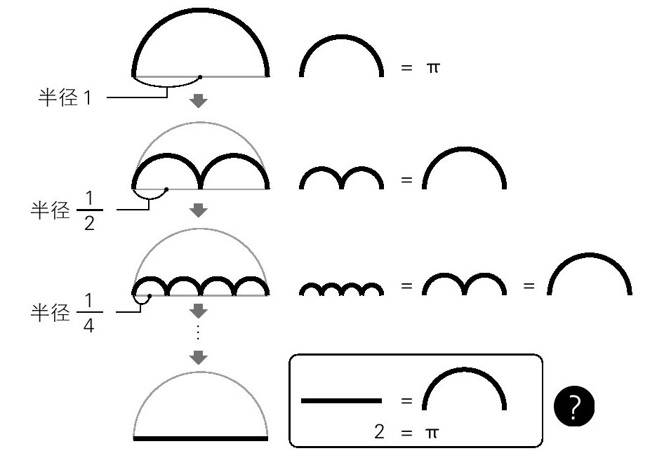
圆周率π和直径2相等吗？
爸爸：“给我画一个半径为1的半圆吧。这个半圆的周长是多少呢？”
儿子：“半径为1的圆形圆周是2π×1。半圆是它的一半……是π！”
爸爸：“正确。那么，两个半径为一半（1/2）的半圆周长的长度，接着取四个半径再分一半（1/4）的半圆的周长……以此类推，像这样半径越来越小，最后会变成什么样子？”
儿子：“半径越来越小，那么圆周长会渐渐接近直线……最后圆的周长会变得跟直径相等吗？”
爸爸：“错误！直径的值为2，π约等于3.14。它们不会相等的。”
儿子：“嗯……看图以为我没有错呢……”
大家知道儿子的想法在哪里出错了吗？
其实他在“半径越来越小，圆周长会渐渐接近直线”的地方想错了。不管半径变得多小，圆周用来描述“弧”的性质没有变化。不管半径变得多小，与作为“直线”的半径都有着不同的性质。
所以，“圆周长和直径的长相等”是绝对不可能的。
另外告诉大家，这道问题中半径越来越小后，圆周长的总和一般会接近于π。
“图形”都有着各自的性质，但往往“画出图形”后，其性质会变得不那么容易看出来了。
如果在地球上绕一圈绳子……
刚才那位爸爸又给儿子出了一道题。
爸爸：“你知道地球的半径吗？”
儿子：“老师在课上讲过！是大约6400千米！”
爸爸：“对，正确。那么如果想要在地球上绕一圈绳子，需要多长的绳子呢？”
儿子：“2π×6400，大约需要4万千米的绳子。”
爸爸：“那么现在要让绳子离开地表1米高，这时需要多长的绳子？”
儿子：“也就是说，圆的周长变大了。我觉得少说也得再多上几千米，搞不好要多上几十千米！”
大家觉得需要多长呢？
大家一起算算看。
“让绳子离开地表1米”，也就是说，“半径增加了1米”。求得此时绳子的周长和地球周长的差，就能知道需要的绳子长多少了。用算式表示如下：
2π×（6400+0.001）-2π×6400
=2π×6400+2π×0.001-2π×6400
=2π×0.001
=0.006283186（千米）
=6.283168（米）
绳子居然只要再长约6.3米就足够了。从地球的硕大来考量，很多人都会觉得“比想象中要短得太多了”。
那么再让我们看看前面的算式。
这个运算和地球的半径其实没有关系。现在把地球半径设为R米来思考。
2π×（R+1）-2πR=2πR+2π-2πR=2π
含有地球半径R的项在计算的过程中就被消去了。这意味着什么呢？
其实就意味着“将绕着球形的绳子向上抬高1米，与球形的半径无关，只需要再多加6.3米左右的绳子”。
也就是说，不管是绕着太阳，还是绕着地球，再或是绕着棒球，如果将绳子向上抬高一米，都需要再多6.3米的绳子。
用算式表示出来后，居然得到这么令人意外的事实。我们终于明白人类的想象力是多么靠不住啊。这也是数学的妙处。
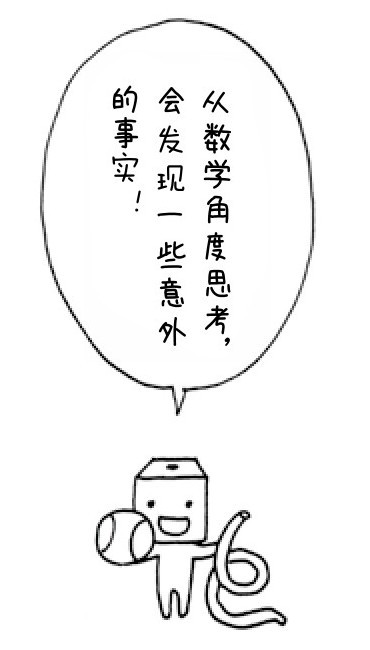
大家是在几岁时开始“数数”的？
1、2、3、……是不是都从指着身边的东西开始，边指边数着记住的？
小孩子会数着积木的数量玩耍。如果只有5个左右，那只要看一眼大概就能数出来。但是，如果有100个以上，该怎么办？
孩子一般会一边指着这种叫作“积木”的东西，一边出声念着数词，按顺序数下去，1个、2个……
这正是数学中“一对一”，也就是“数数”的真面目。在小学一年级的算术课上，就是要教给孩子们如何一一对应，并理解数字的写法等，以便他们能对数字加以应用。
“数数”是什么？
大人们总是觉得这是件理所当然的事，不会抱有任何疑问。也许幼小的孩子会更加贴近“数的真理”。
“数词”出现以前，人类会在树枝、骨头和岩壁上刻下痕迹来描述数量。人类最古老的数字记录在约35000年前，从非洲斯威士兰洞穴里发现的刻在狒狒骨头上的印记。人们认为这是当时的人们对狩猎猎物数量的记录。
在那之后，文明诞生于世界各地，每个文明都创造出其独有的数字标记法。
令人震惊的是，在公元前19世纪到公元前17世纪左右的美索不达米亚文明中，巴比伦人在黏土板上留下了楔形文字，其中记载了六十进制2的值。
人们在身边发现了越来越多“可以数的东西”，“数数”在不断进化。
这可以认为是“数字”和“文明”的起源。
其中的关联可以在“数字”中得到答案。
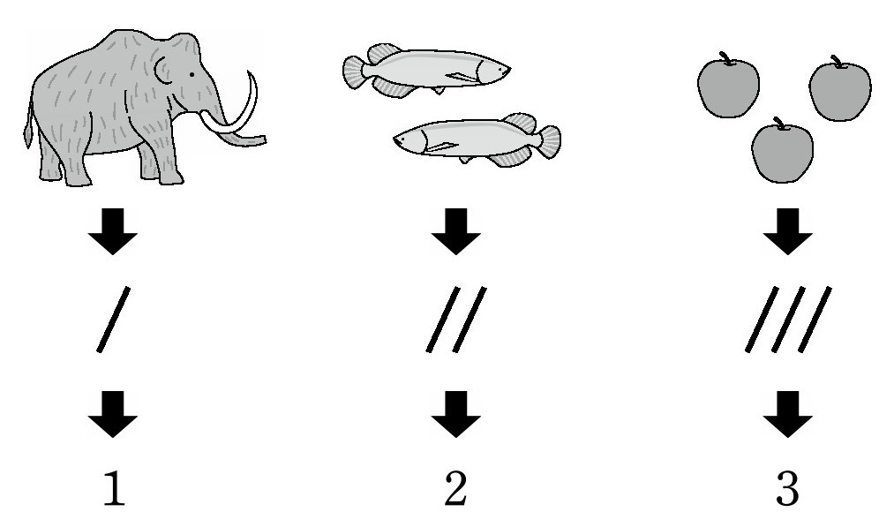
数与数字
除了1、2、3……这些用于计算的数字（阿拉伯数字）以外，还有罗马数字（Ⅰ、Ⅱ、Ⅲ……）和汉语数字（一、二、三……）等各种数字。
每个文明都有“数”的概念，并创造出它的象征——“数字”。
接触各种不同的数字，想象它们是如何形成的，令人感慨颇深。
那股冲动的必要性对于大人和孩子，以及古代的人们来说都是一样的。
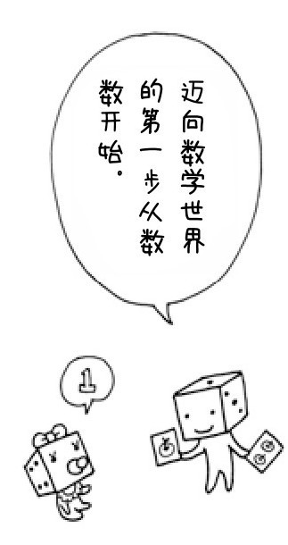
6的约数有1、2、3、6。
28的约数有1、2、4、7、14、28。
大家能发现“6”和“28”的共同点吗？
提示是“约数之和”。
在6的约数中，除去6之外，其他约数的和为1+2+3=6。
同样地，在28的约数中，除28之外的约数之和为1+2+4+7+14=28。
也就是说，6和28是“除自身以外的约数之和等于自身的数字”，这种数字称为“完全数”。
“完全”这个词让人不由得产生完全数很高贵的印象，有种只可远观的美。现在就让我们对完全数的调查发起挑战，这会让我们印象更加深刻。
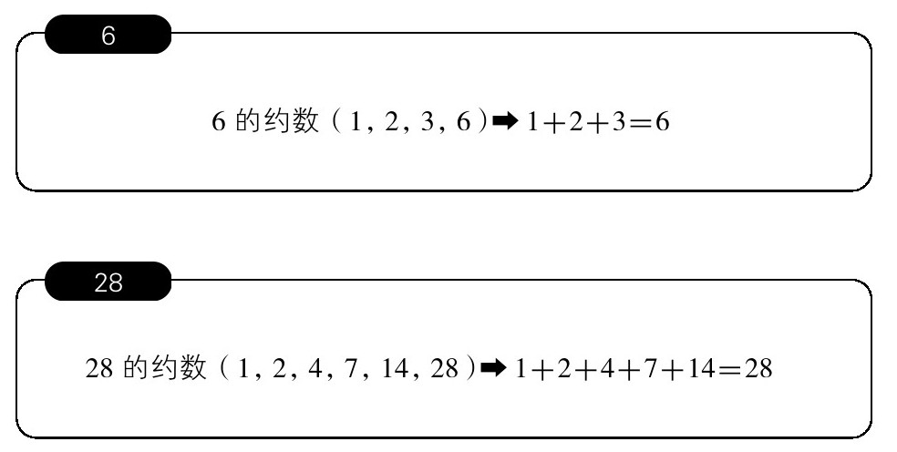
6和28是完全数
想要找到完全数，可以按顺序依次查询每个数的约数，可是大多数人马上就会选择放弃吧。
因为完全数不是简简单单就能找到的，它是“特别的数”。
那么，究竟怎样才能找到完全数呢？
事实上，我们知道完全数和“梅森素数”有关。对于自然数n来说，“梅森素数”就是2的n次方减去1的素数。
也就是说，找到“梅森素数”就自然找到了“完全数”。
请按照下页的算式来导出完全数。
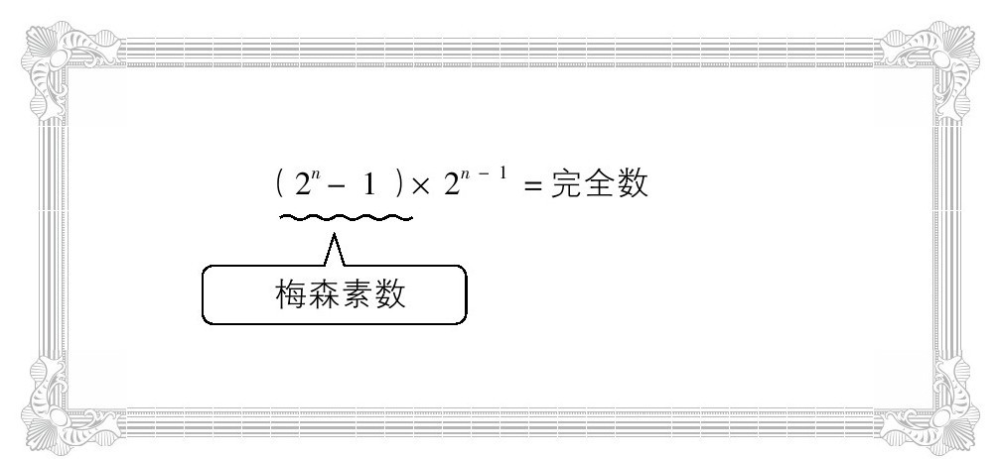
梅森素数和完全数
最小的“梅森素数”是3（当n=2时），所以n=2时会得到最小的完全数。
（2n -1）×2n-1 =3×2=6
即可知道最小的完全数是6。
接下来试试当n=3时会得到什么。
“梅森素数”为23 -1=7。
第二个完全数是28。
第三个完全数应该是n=4的时候……我们一般会这样想，这时先让我们来确认一下此时“梅森素数”是否仍是素数。
24 -1得到值为15，15并不是素数。因此，这次不能求出完全数。
第三个素数是n=5时得到的数。由此可以导出第三个完全数是496。
你能用这个算式得出多少个完全数呢？把算式中求得的完全数的约数相加，来验证一下它是否真的是完全数。
不过大家要知道，将这项计算继续下去来寻找“梅森素数”和“完全数”是非常困难的。开始的时候只需要很简单的计算就能解决，可是渐渐会变成很庞大的数字计算。
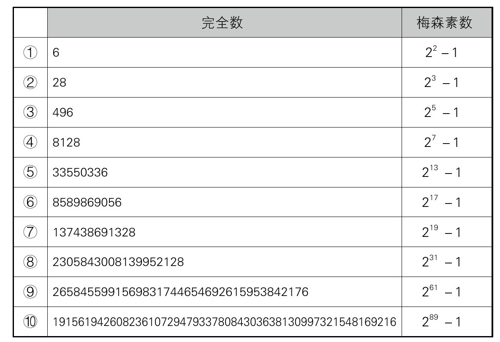
前十个完全数
另外值得一提的是，欧拉已经证明231 -1是素数，从而发现了完全数2305843008139952128这个数字是第八个完全数。
现在已经发现的“梅森素数”有48个，完全数也同样是48个。
在无限的自然数中只找到了这几十个完全数。
完全数是否存在无限个？
有没有奇数的完全数？
怀着这些未解的疑问，对未知“完全数”的探索至今仍在继续。等到人类将这些疑问全部解决时，我们才能说真的理解了“完全数”。
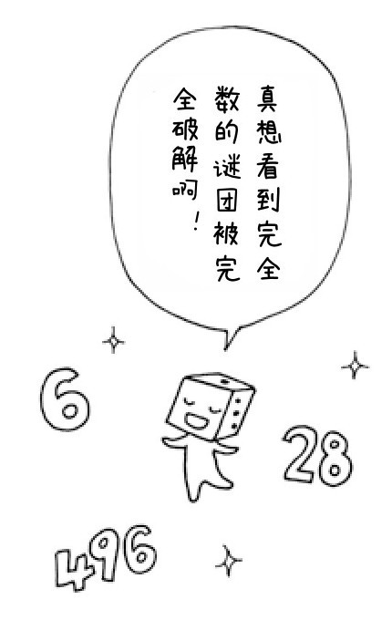
研究地球形状和大小的学问叫作“测地学”。公元前3世纪，埃及的埃拉托色尼（前275～前194）测定了地球的大小。
现在要给大家介绍的是一个为地球形状着迷的数学家的故事。
“正像它名字里所说的那样，是一个‘球形’”，相信很多人都是这样认为的。准确地说，这个答案是错误的。地球由于“自转和离心力”的作用，赤道附近要比南北方向稍微膨胀一些，其形状近似于“旋转的椭圆体”。
明确地球是一个旋转的椭圆体是人类的巨大进步。“子午线”（连接南极和北极的大圆）的长度可以通过数学来计算，其结果就是可以利用三角测量的方式来绘制地图了。
1841年，德国天文学家、数学家贝塞尔（1784～1846）在当时世界上已有的测量结果的基础上，算出了地球是什么样的形状以及它的大小。
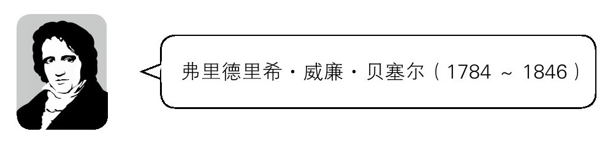
结果证明，“地球是赤道半径为6377397.155米、两极半径为6356078.963米、扁平率为299.152813分之一的旋转椭圆体”。
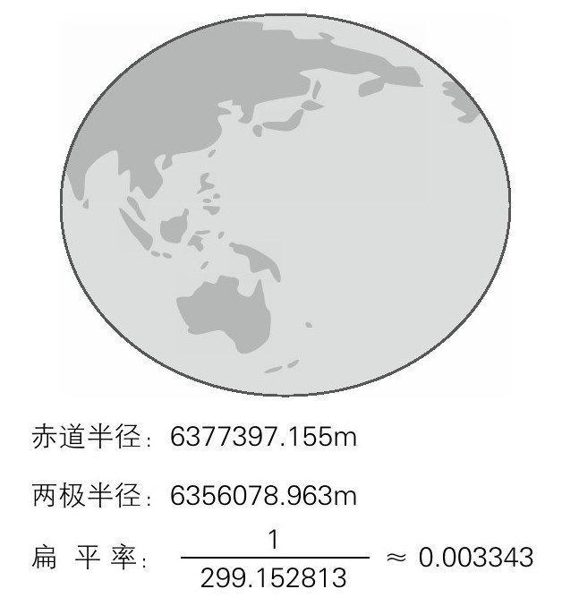
地球的形状是旋转的椭圆体
“扁平率”是表示“旋转椭圆体跟球形相比变形的程度”的数值。完美的球形的扁平率为0，变形得越厉害，这个数值越接近1。从这个数值我们可以得知，地球并不是一个完美的球形。
这个结果被称为“贝塞尔椭圆体”。之后，贝塞尔椭圆体在全世界都加以应用，日本的测量法中直到2002年都在采用贝塞尔椭圆体，现在利用人造卫星，得出了“GRS80椭圆体”。GRS80的意思是Geodetic Reference System 1980。
明确了地球形状与大小的贝塞尔是一个什么样的人物呢？
他是数学家、天文学家，同时也是一位有着传奇经历的人。
贝塞尔从14岁开始在贸易公司工作，为了处理一些航海上的问题开始学习数学。
之后他又对决定海上经度的方法——天文学产生了兴趣，最终研究出了哈雷彗星的轨道计算方法。
最后他从贸易公司辞职，转而到天文台工作了。作为一个天文学家，他留下了许多业绩。
他吸引我的是，虽然没有受过高等教育，却留下这么多优秀的业绩。他用自己的努力和热忱掌握了大量的知识。
另外在数学领域，贝塞尔也是名垂青史。他创建了求子午线弧长的贝塞尔公式和计算行星轨道的“贝塞尔函数”。
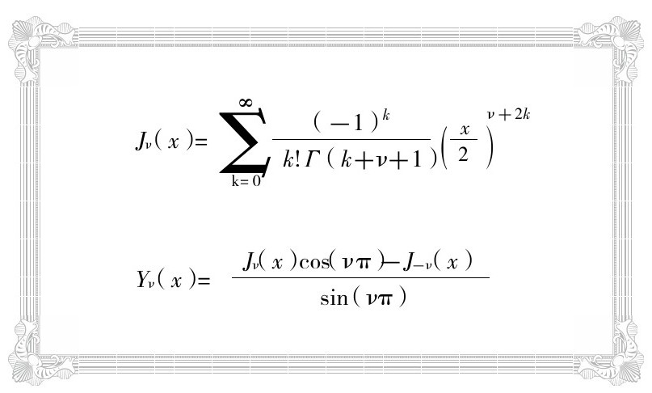
贝塞尔函数
“贝塞尔函数”是瑞士数学家、物理学家丹尼尔·伯努利（1700～1782）发现的（他是数学家雅各布·伯努利（1654～1705）的外甥）。贝塞尔为了解开开普勒方程，用到了“贝塞尔函数”来计算行星的运行轨道。
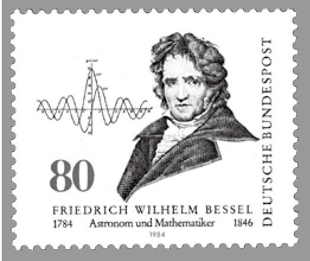
根据贝塞尔函数的图表设计的邮票
1984年在西德发行，纪念贝塞尔200周年诞辰。
上页的邮票中，在贝塞尔的肖像旁，还清晰地画上了“贝塞尔函数”的图表。
在研究天文学的基础上，也需要借助数学的力量。
贝塞尔亲眼、亲手去测量与地球相距很远的星星，从数学的视角出发，将真相公之于世。
他还是一位被星星之光引导的数学家。
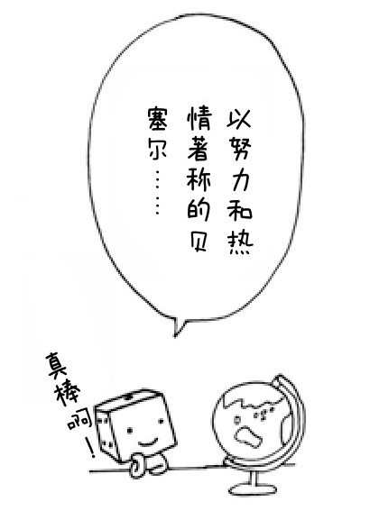
数学——是人类不停编织的“故事”，一边写入新的发现与证明，一边传扬过去宏伟的故事，让读者一直为之着迷。数学可以说是一个never ending story（没有结局的故事）。
编织数学故事的不只有数学家，为“数”着迷的伟人们也吐露了不少金玉良言，为故事增光添彩。
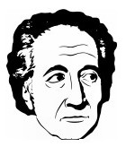
数字不会支配世界，而是告诉我们该如何支配世界。
歌德（作家，1749～1832）
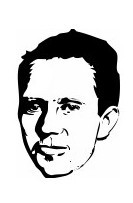
一旦知道数学理论的创造力，无论是对于自然，还是艺术，都能感受到它的影响。
维尔纳·海森伯（物理学家，1901～1976）
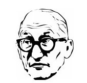
数学是人类为了捕捉宇宙而筑起的巨大建筑。在那里我们会遇到绝对的东西、无限的东西、牵动人心的东西和难以捕捉的东西。
勒·柯布西耶（建筑家，1887～1965）
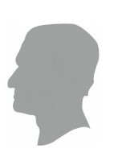
算术是计算的智慧。如果没有这种智慧，则不会有任何一个哲学家或博士。
L.马格尼茨基（数学家，1669～1739）
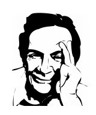
数学是一种超越语言的思维方式，它既是语言，同时又是一种理论。数学是思考的武器，那里集中着很多人正确的思考结果。
理查德·费曼（物理学家，1918～1988）
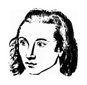
真正的数学家一定是一位热情的人。没有热情就没有数学。
诺瓦利斯（诗人、小说家，1772～1801）
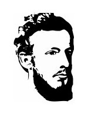
数学的本质在于自由，数学是在自由意志的驱使下构成了概念和公理。
格奥尔格·康托尔（数学家，1845～1918）
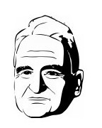
数学的本质是永远年轻。
埃里克·坦普尔·贝尔（数学家，1883～1960）
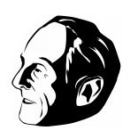
从事数学教育的人都像路标一样。一个箭头指向走过的过去，还要有另一个箭头指向还未经历的未来。
雨果·施泰因豪斯（数学家、教育家，1887～1972）
超越时代、超越体裁，数学永远大放异彩。为下一代编织“故事”是生于现代的我们的使命。当你讲述“数”的时候，你会说出一个怎样的故事呢？
sin、cos、tan……
这些有节奏感的词汇奇妙地留在我的记忆中挥之不去。但是与它们留下的印象相反，想要把它们运用自如可不是件容易的事。
我从2000年开始作为科学带头人展开活动。那时身为研究生的我会到补习班里兼职教高中生数学，虽然对教授“应试”数学感到很不自在，不过还是在讲台上度过了一天又一天。
高中三年的时间都要跟sin、cos、tan打交道。高一时，学生们就在“三角比”的研究中遇到了sin、cos、tan，到了高二，三角比突然变成了“三角函数”，于是数不清的公式开始在眼前团团转。选择了理科的高三学生会在微积分中与三角函数有更深的接触。
高中生高喊：“为什么我们非学三角函数不可呢？三角函数将来有什么用？”
对于现场的老师来说，很难确保有时间来一个一个地回答学生们的提问，往往还没有讲过sin、cos、tan的故事，高中数学就结束了。
学数学显然不只是为了考试。可是在日本，很多孩子都被考试愚弄着，处在一个很严峻的现实中。
正是出于对被置于此种状况下的高中生的强烈关注，科学带头人才应运而生。我开始讲一些和课堂无关的话题，只为大家讲述“什么是数学”。
人类创造的数学，在过去、现在、将来都是非常宏大的“故事”。一本超越数千年、只呈现出世间的真实的卓越的厚书——这正是“数学”。人类编织的数学故事不能“教授”，只能“讲述”，这一发现对我来讲非常重要。
这一部分的主人公是苏格兰数学家科林·麦克劳林（1698～1746）。他的优秀才华甚至得到了微积分奠基人艾萨克·牛顿（1643～1727）的认同。
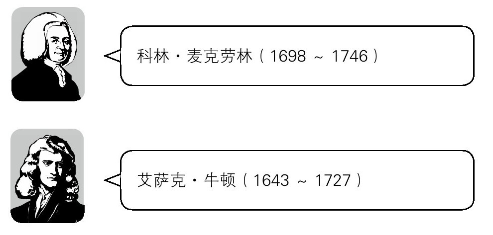
我能邂逅活跃在18世纪的麦克劳林的功绩，是以一个身边的用具为契机。
那就是“科学计算器”。科学计算器是一个可以应用于科学、工学、数学等不同领域的特殊计算器，可以计算平方根（）、对数（log）和三角函数等。
其实我之所以对数学怀有如此深厚的兴趣，契机之一就是计算器的存在。虽然一言不发，但是只要你按下按键，它就一定会以数字回应你。现在想想，其实这就是“函数”本身啊。
函数定义的关键是“一一对应”。x的值一旦设定了，一定会有一个y与它对应，这时候我们就可以说“y是x的函数”。科学计算器正是这样一种能让你切实感受到一一对应的机器。
函数原本在日语里也写作“函数”。科学计算器就像它看上去那样，可以说是一个塑料“盒子”。向塑料盒子里输入数字，然后液晶屏上立刻显示出数字。
若直角三角形的斜边（c）与底边（b）之间的锐角为θ，则底边与斜边的比（b/c）为cosθ，高（a）与斜边的比（a/c）为sinθ，高与底边的比（a/b）为tanθ。
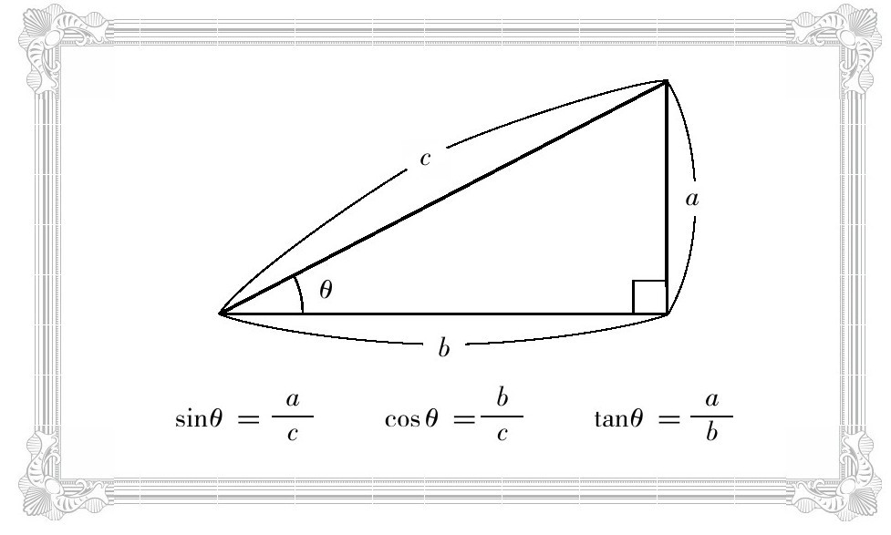
三角比
古希腊天文学家喜帕恰斯（约前190～约前120）总结出了最初的三角法数表，因此他被称为“三角法之父”。
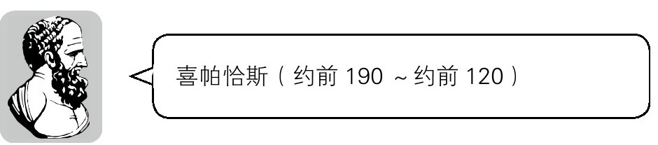
接下来，让我们实际操作一下科学计算器。
查询sin30°的值时，科学计算器返回了如下答案。
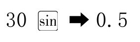
想必有很多人记得sin30°的值为0.5，用分数表示为1/2，也就是先前定义的2：1：√3的三角定律中两边之比。
接下来，我们来查一查sin31°的值。这个数值无法立刻想出来。但是你看，科学计算器不是一下子就给出了答案嘛。
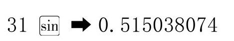
为什么科学计算器能够马上知道这个麻烦的sin31°的值呢？
这对当时11岁的我来讲可是个很大的震撼，完全无法推断出来。这个记忆直到现在都十分鲜明。
电子计算器的计算原理不过是基本的加法和乘法。也就是说，计算器只能用加法和乘法来算出sin31°的值。当时我已经知道“三角比是由三角形的边长定义的”，但是“sin31°=0.515038074”这一结果已经超出了我能理解的事实范围。
我一直抱着这样的疑问，直到几年后——在我高二的时候，才见到了光明。那时我遇见了和sin无关，而是某个统计问题的开端——“麦克劳林展开式”运算。
麦克劳林展开式到底是一种什么样的运算呢？
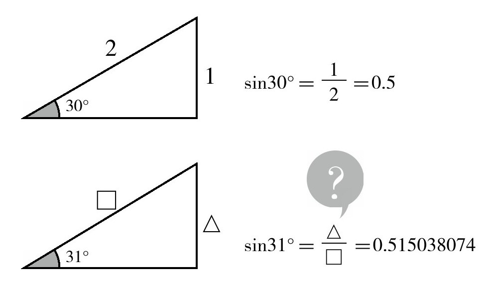
sin31°的值是怎么求出来的？
用“长”来表示“角度”？！
我在看到下页的公式时，立刻直观地发现这个公式“应该可以计算sin31°”。计算方法如下：
首先把角度单位由“度”变为“rad”。
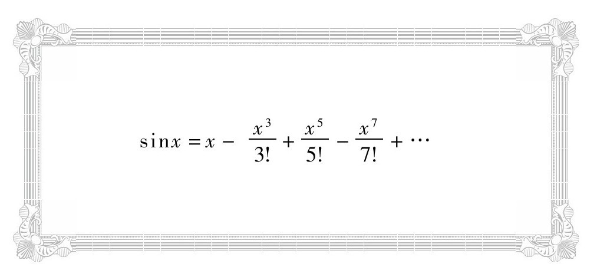
三角函数的麦克劳林展开式
为什么要特意把表示角度的“°”换成“rad”呢？这里为大家讲一讲弧度法（radian）。
比如，大家可以想一想，在二次方程y=x2 中，x是一个什么样的量？x表示的是x轴和原点的距离（长）。
同样，“角度”不也能用“长”来表示吗——也就是说，不管是函数y=x2 ，还是三角函数y=sinx，都应该把x当作同一个量来处理。
定义极其简单。1rad表示“与圆的半径（英语中叫作radius）等长的弧所对应的中心角的角度”。以半径为1的圆（单位圆）为例就容易理解了。圆的周长为2π，360°=2πrad。于是，
180°=πrad
90°=π/2 rad
这样一来就清楚多了。一眼看上去似乎很难的rad居然把“三角比”一举变成了强有力的“三角函数”。
顺便告诉大家，“1度”是将一周分为360份的量，即将旋转一周定义为360度。
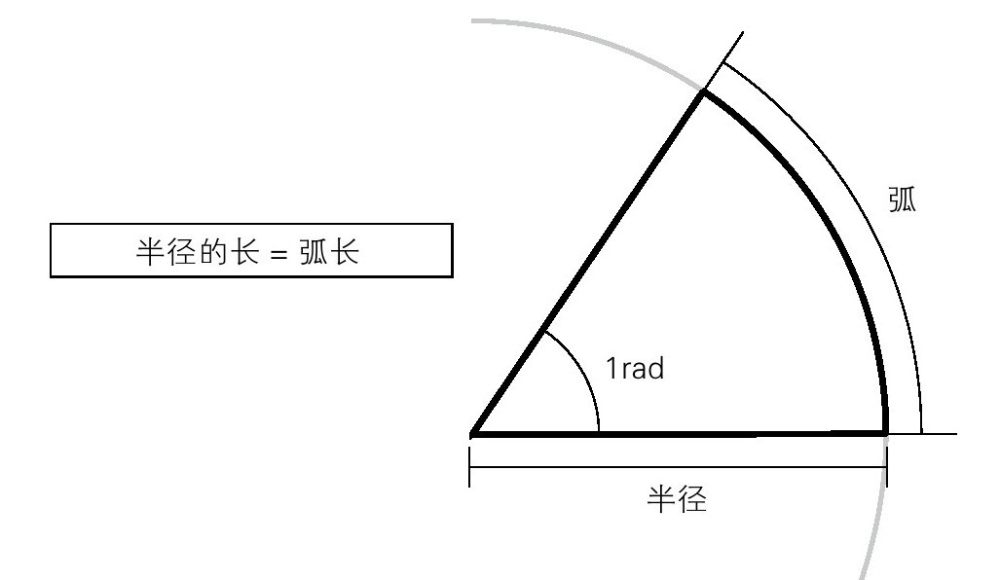
弧度法（radian）
360这个数值来源于地球绕太阳一周所需要的时间——公转周期（1年=365天）。
由此对“角度”的描述，一开始是从地球和太阳的领域（天文学）中得到的“°”，最后过渡到了通过超越天体范畴的普遍的量（长）就能测定的弧度法“rad”。
那么让我们用弧度法来表示31度吧。2πrad=360°，由此可以得到下面的算式。
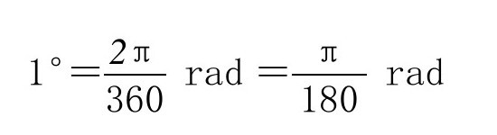
因此，可以推导出下面的算式
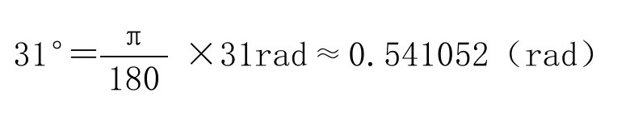
接下来只要把这个值代入到麦克劳林展开式中就可以了。大家可以用计算器实际计算看看，亲自确认一下得到的是一个什么数值。
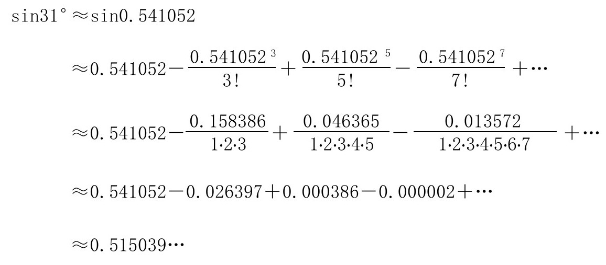
代入麦克劳林展开式
从约算的结果看来，这个算式可以很好地说明科学计算器的结果sin31°=0.515038074。
在弧度法的帮助下，三角比畅快地变身为三角函数，这也是微积分给予我们的恩惠——在这道问题中是可以用麦克劳林展开式的资格。
这样我便通过计算器学习了三角比的历史。
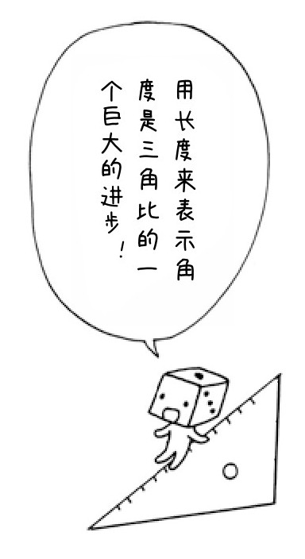
1、2、3、4、5、6、7、……
一切从“自然数”开始。数的世界历史都是从这里开始编织的。
文明的进化与数和计算的关系是切也切不断的。数的世界在自然数的基础上，出现了有理数（整数、分数）、无理数等实数，甚至还扩张到了复数。这一系列中最大的金字塔就是“欧拉公式”。想要一睹“虚数”世界的风景，还是要先看看欧拉公式。
为什么数的世界在不断扩张呢？这是“数”与“计算”之间的关系所致，从中我们看出了其存在的必然性。
“0”这个数字意味着在数量上是空的。“重量为0”表示没有重量，“两人的体重差为0”表示两人的体重相等。
“0”的概念是在古埃及、古希腊以及古印度的数学中确立起来的。这个概念一被确立起来，在它前面的“负数”也就浮出了水面。
要满足“3+□=0”，□中的数字应该是-3这个负整数（用□表示的算式是方程式）。
古代的人们原本只认同正整数和0的“数的世界”，但是在加法的“演算”中，他们发现还需要有“负整数”。
“正整数”“0”和“负整数”统称为“整数”。
同样地，想到“整数”和“乘法”，人们又发现必须要有“有理数（分数）”的存在。
能满足“3×□=-5”的□中的数字，在整数的世界里可是找不到的。这个“□=-5/3”是一个分数。
顺便告诉大家，“有理数”这种说法是由英文rational number翻译而来的，但它似乎是翻译上的一个失误。ratio是“比”的意思，所以直译过来应该是“比数”的意思。
接着想到了“相同的数字相乘”，发现又需要有新的数了。
“□×□=2”，满足这个算式的□在整数和分数中都找不到。□是1.41421356……用2表示。这种数称为“无理数”，小数点以后的部分无限不循环。
有理数（包括整数和分数）和无理数共同构成的数的世界称为“实数”。
想要对我们身边的事物和现象加以说明，有了实数的世界就足够了。黄金比例（1.618……）、白银比例（1.414……）、圆周率（3.141……）、纳皮尔常数e（2.718……）等著名的无理数都存在于实数的世界。
方程式“□×□=2”可以在实数中找到□的数值，可是问题在于“□×□=-2”的方程式。满足这个方程式中□的数，在实数的世界里是不存在的。
这种新的“虚数”从发现到被认同经历了很长的一段时间。16世纪时，意大利数学家卡尔达诺（1501～1576）在解一个三次方程式时，初次导入了虚数的概念。
另外，法国哲学家、数学家笛卡儿（1596～1650）将虚数命名为“超越想象的数”，成为英语imaginary number的词源。
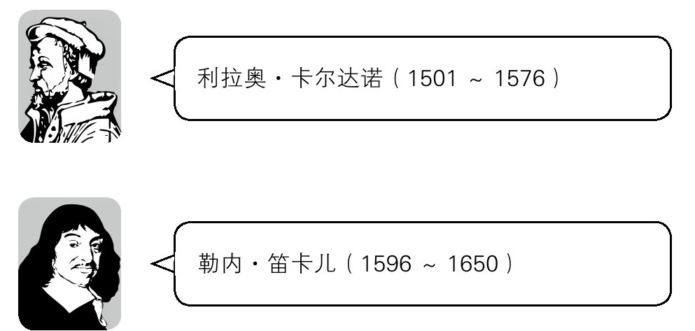
笛卡儿的这个命名，对新的数似乎持否定态度，认为它是看不见、摸不着的。在那个时代，0和负数姑且都被认为是架空的数，何况是满足“□×□=-2”的数呢，更是得不到人们的承认。
有趣的是，日本很多理工科的学生都认为“虚数并不存在”。原因是很多实数的现实性（如尺子刻度上的数字）对虚数来说并不存在，更不用说“虚数”“imaginary number”带有否定意味的词语一直在给这种思想以支持。
笛卡儿对于虚数的否定想法直到现在依然存在。
但是虚数确实存在。这与实数存在的理由完全相同。因此，无论实数，还是虚数，都在“数的世界”里真实存在着。
给虚数赋予现实意义的正是巨人欧拉。
◆数的世界
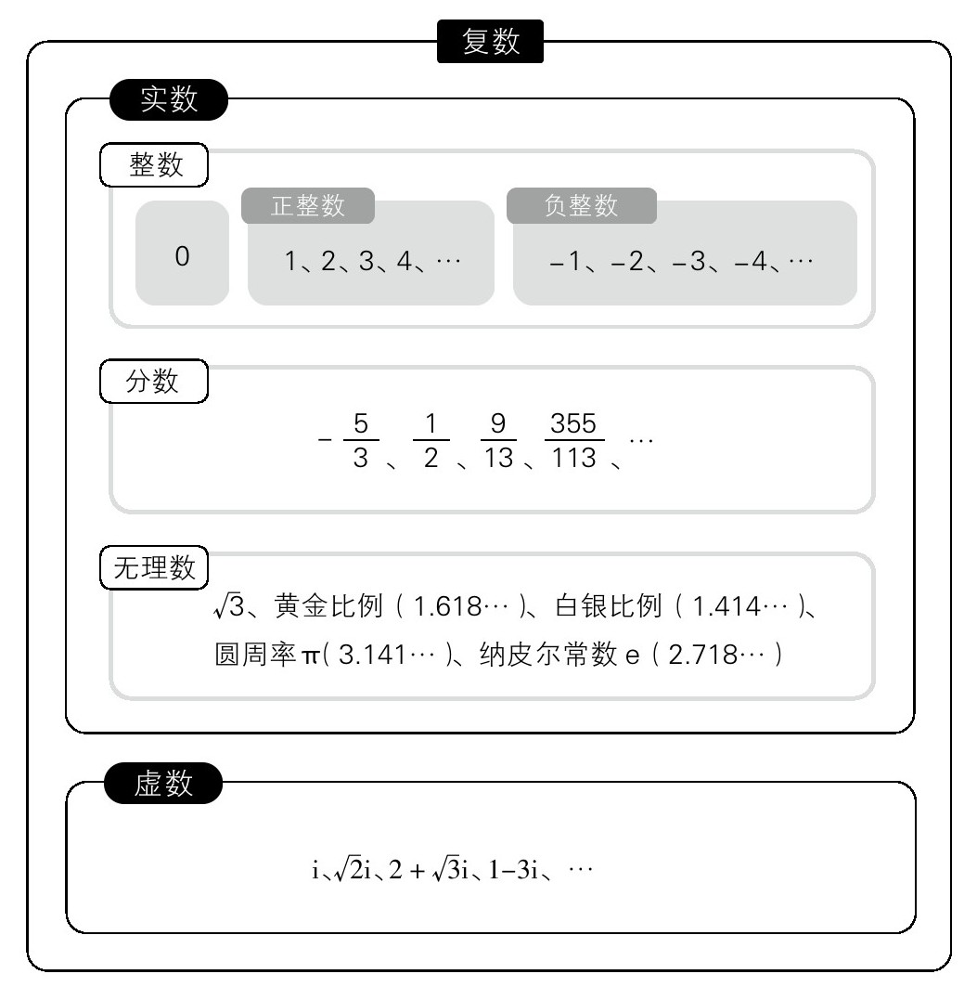
◆所谓复数
复数a+bi（a、b是实数，i是虚数单位）
·b=0→实数
·a=b=0→0
·b≠0→虚数
◆虚数单位
i=√（-1）
i×i=-1
◆欧拉公式
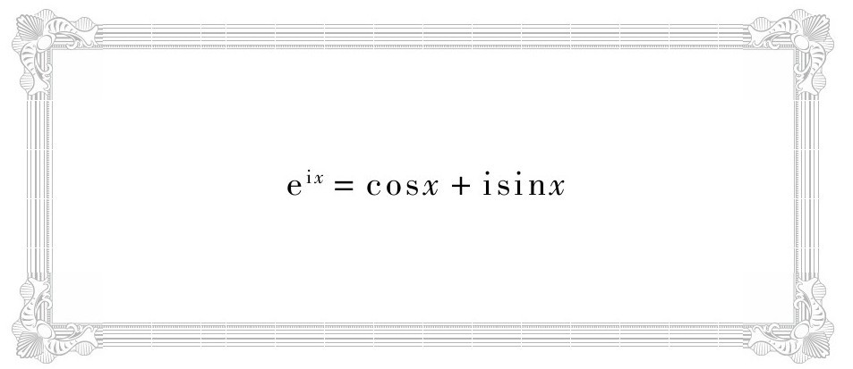
最大的象征就是“欧拉公式”。这个算式对于“三角函数”来说具有一个划时代的意义。
欧拉对纳皮尔常数e的探索以纳皮尔对数为开端。
纳皮尔对数是天文学家为了能轻松计算三角函数而想出来的。
欧拉敏锐地看出e真正的广阔天地在微积分的世界。
这个算式中的x是实数，而虚数i是从代数中发现的，其前途不可限量。
◆请注意欧拉公式里的虚数
让我们再来看看这个算式。
eix =cosx+isinx
黑色的虚数仿佛被灰色的实数包围了。这与虚数单独的算式截然不同，我们可以一目了然地发现虚数是由具有真实性的实数支撑起来的。
◆欧拉公式表达的内容
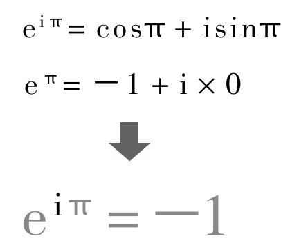
欧拉决定性地赋予了虚数真实性。
x可以代入所有的实数。
因此，欧拉把一个珍藏的实数代入了x，那就是π。
cosπ=-1，sinπ=0，于是欧拉公式一举变身，变为eiπ =-1。
由于π这位大明星的特别出演，欧拉公式散发出璀璨的光芒。
三角函数sin和cos马上被消除，呈现的只有数之间的关系。被三个实数“e”“π”“-1”包围的虚数i终于可以自信满满地展现自己的实在性了。
另外，这三个实数真实性的根源与“虚数”的关系也被发现了。
就像声音和颜色需要协调一样，这个公式告诉我们数也有协调一说。
我们通过五感去感知声音和颜色的协调，并借此创造出音乐和美术。欧拉也恰恰向我们证明了，人类也拥有感知数的协调的另一种感觉——数觉。
正是基于这种感觉，我们才能创造出“数学”这种艺术。
我们生活在地球上。
每当想到“坐标”时，我的这种感受就会更加强烈。
如果有人问你：“现在你在地球的哪个位置？”你会怎么回答？就算报上国名、地名也谈不上是“正确答案”。
对地球上位置最清晰的表述是“经度”和“纬度”。现在这个时代，人们很容易就能获取世界上的任何地图，但是人类为了获取这些地图曾经历经了很多苦难。
大家知道经度和纬度是如何规定的吗？
“纬度”可以通过北极星的位置很容易地查询出来。北极星在地球自转轴的延长线上，即北极点正北的方向，因此，能看得见北极星的角度（仰角）就是纬度。
可是与此相对，想要获得“经度”却是极困难的。在大航海时代的英国，因为无法测定经度，导致海难事故频发。因此，那时人们愿意付出高额的赏金来求得正确的经度测定法。
当时有很多方法被提案，有利用木星卫星的测量法（预测在木星上看得到和看不到木星卫星的时间，然后求出与实际观测时间的差）、月距法（利用月球运行的方法）等，最后随着精确的手表被开发出来，问题终于得到了解决。在那之后，人们将格林尼治子午线规定为经度0度，以此为基准的测定法在世界范围内被广泛应用。
经度、纬度表示地球在这个天梯上的位置“坐标”——经线和纬线这两条垂直相交的直线上分布的“两种数值”。
因此，你所在的地点（点）可以用经度、纬度（坐标）来表示出其在地球上的正确位置。
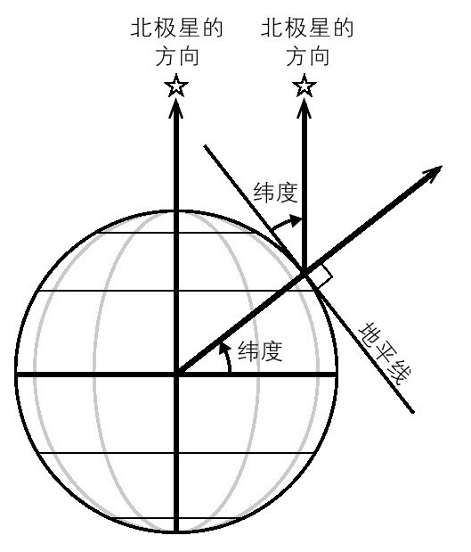
纬度
请想象一个地球仪。
地球仪上画着的经线、纬线都画成了圈，因此可以说是“曲线”。
那么请只看地球仪上的一小部分。在有限的一部分中——一块小地图上，经线、纬线都是画成“直线”，也就是“局部坐标”。
这些画着小块平面地图的“局部坐标”拼接起来，表现的就是整个球形的地球。
对于地球整体来说，这些小块小块的“过渡”的地图在数学中被称为“实像”。英语中的“map”除了被翻译为“地图”，还有“实像”的意思。
通过map这个单词，我们似乎看见人类勘测地球进而绘制地图的轨迹。我们应用数学来“勘测”，不断重复脚踏实地的工作，充分实现自己的存在。
我们生活在地球上。
这个事实未免太过显而易见，因此常常会被我们忘记。希望大家偶尔可以看看地球仪或者地图，认真思考地球与人类的关系。这或许是当代的我们必须要体会的。
回顾数学史，我不免生出疑问。
为什么现在的学生在学校里学不到“球面三角法”？“三角函数”和“球面三角法”明明有着不可割舍的羁绊。
我们在前面已经对三角函数有了一定的叙述，现在让我们把目光转向三角函数的起源。等到大家知道了它的故事，想必就会对我抱持的疑问怀有同感了。
在地球这种球面上，两点间最短的曲线就是直线。探索包含这条直线的三角形（球面三角形）的“边长”和“角度”之间关系的方法就叫作“球面三角法”。
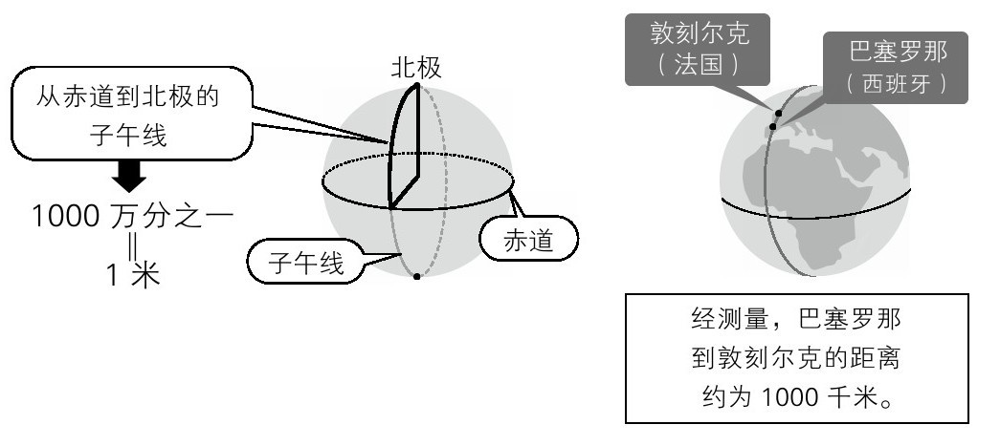
“米”是测量地球时诞生的
经测量，巴塞罗那到敦刻尔克的距离约为1000千米。
测量大地的“球面三角法”在测量史上也曾真实存在过。
当代社会科学和发明创造之所以如此发达的理由之一，就是因为长度单位“米”几乎在世界范围内都统一使用着。
据说在18世纪的法国大革命时代，欧洲有着40万种长度单位。法国政府实在忍无可忍，于是以国家的威信展开了一项工程，那就是“子午线测量”。怀着打造“世界统一单位”的梦想，法国将这项艰难的工程攻克，取得了成功，“米”随之诞生了。
“米”成为经济、贸易、科学等所有领域的基础，支撑起了当代社会。
但是现在仍有地方使用“寸”“英尺”“码”“英里”等单位，因此它还称不上是完全意义上的“世界统一单位”。
其中，有些领域在数千年前就得到了发展，那就是天文学。
天文学的特征是，它并不是卖弄“长度”单位的学问，而是靠“角度”支撑起来的。令人震惊的是，大约公元前2000年在古巴比伦尼亚诞生的六十进制法直到现在仍在使用。
对于“角度”单位诞生的背景有以下两种说法。
一种说法是，古巴比伦尼亚规定一年有365天，于是决定一周为360度——也因此规定了直角为90度的单位（角度）。
另一种说法是，古巴比伦尼亚使用六十进制法，把圆分解为6个正三角形，根据六十进制法，正三角形的角被设定为60度。
人类在观测天体运动时一般都在关注它们的旋转运动。天体观测的数据用旋转角来表示。“长度”对测量地上的东西十分奏效，但对于触不可及的遥远的天体测量，还是“角度”更为适合。
创造出第一个理论的是古希腊天文学家喜帕恰斯。
他在天文学上有着诸多功绩，如决定了现代星座起源的四十六星座，按光照亮度将恒星分为一等星到六等星，根据地球的岁差运动（擂槌运动）发现了春分点的移动。另外，根据喜帕恰斯周期的发现，一太阳年被规定为365.24671天。
优秀的天文学家喜帕恰斯想要在天体上导入经度和纬度，以便在天文学中也使用球面三角法。因此，他先确立了平面三角法，制定了精密的三角函数表，并对三角函数做出定义。这个三角函数与现在有着细微的差别，但本质上是相同的。并且，他还根据导出的加法定理，制作出了一个从7.5度到180度、以7.5度为单位刻度的数表。
将喜帕恰斯的成果发扬光大的是古罗马天文学家、数学家克罗狄斯·托勒密（约90～168）。
他做出了以0.5度为单位刻度的180度三角函数表。以精度高著称，即使跟现在相比，小数点第四到第五位也基本一致。这个三角函数表收录在数学和天文学专业著作《天文学大成》中。
另外，托勒密还著有《地理学指南》，该书是世界上第一本用经纬线绘制地图的著作。
以上两本著作将天文学、地理学与数学结合，汇集成当时最前端的知识体系，在几个世纪都被当作天文学的教科书来使用。有趣的是，托勒密的天文学主张（地球是宇宙中心的天动说）是错误的，但是在数学上却非常精密。
《天文学大成》（1515年印刷，拉丁语版）的三角函数表
现在学校里能学到的“三角函数”属于“平面三角法”，但在距今两千年以前，在天体测量中，“三角函数”主要用于“球面三角法”。在托勒密之后很长一段时间里，球面三角法都有着显著发展，可是与此相反，三角函数在“平面三角法”的车辆和建筑领域中发挥的机会并不多。
现在的数学教育已经不再教给大家“球面三角法”了，我想这就是“三角函数”让很多人感到枯燥乏味的原因。
“球面三角法”确实要比“平面三角法”复杂。但是我们生活的舞台，无论地球还是天体，都是“球”。“球面三角法”才是永恒的主题。
三角函数是为什么而存在的？
在教学目标中，微积分所占的比重实在太大了，导致出现了其他领域存在的意义越渐渺小的不利趋势，结果导致学习数学的整体动机遭到了破坏。
三角函数的原点在于“星星”。我常常在想，现在的教育计划就不能让孩子们认识到这一点吗？
现在通过卫星已经实现了对地球规模的测量，于是更加确定了三角函数存在的意义具有绝对的现实性。这对三角函数的初学者来说可谓最好的教材。
人类在星光的指引下获得的语言——三角函数。
人类一心一意地将重点集中在球面三角法上，它与三角函数相伴共生。只要我们人类在天与地之间生存，这一点就不会改变。
什么是“微积分方程式”？
微积分出现在方程式中是以“运动”为开端的。人类为了理解“运动”，做了不懈的努力。
有时是为了研究大炮的运动。
有时是为了理解我们赖以生存的地球和宇宙。
本部分我们将主要讲述对“运动与数学”关系着迷的数学家的故事。
产生运动的原因是什么？
为了讲述“运动的过去和将来”，对运动本质的研究从古希腊时期就开始了。
古希腊哲学家亚里士多德（前384～前322）通过对“身边运动”的深度注意和观察，想到了力和运动的关系，得出了“物体的本性是静止，运动的物体是因为有源源不断的力在起作用”的结论，并将运动分为两种：一种是“力存在于物体内部自然生成的运动”（自然运动），另一种是“施加外力时产生的运动”（强制运动）。
自然运动最有代表性的例子就是“自由落体运动”。亚里士多德对物体下落的理由阐释如下：
“物体向着‘自然’的地点——地球中心下落的运动被称为自由落体运动。就像一个人往家里走，离家越近他的步伐就越快。物体也是一样，越接近‘自然的’地点，下落的速度越快。这就是加速的理由。”
与此相对，将东西抛出的“抛物运动”可以称之为手对物体施加外力的强制运动。
那么当手放开后，物体是在怎样的力的作用下运动的就是个问题了。
亚里士多德认为“和物体接触的只有空气”，于是他做出了以下说明：“自然不能忍受真空，物体离开手后产生的真空部分是被自然所排斥的，所以会向那个部分注入空气，于是注入的空气会继续推动物体。”
从现今的角度来看，这个想法实在有些荒唐。但是，他的伟大在其精神中有了体现。这种无论如何都要给运动的本质赋予合理的解释的精神，对科学世界来说是跨时代的。
这种精神得到了后世的传承。天文学家喜帕恰斯创立了三角函数表，用以说明天体的运动。
14世纪的欧洲会用大炮来当作武器，因此，人们开始探索炮弹和弹丸如何运动的“弹道理论”。当时人们并不认同亚里士多德主张的“被打出的炮弹是由空气托起的”，而认为这是一种“与空气对抗的运动”。当时的科学家建立了一个假说，认为施加给炮弹的力是为了推进炮弹才持续运动的（抛物运动）。
另外，人们认为对于自由落体运动，物体的重量成为它本身的作用力，下落过程中力量不断蓄积，所以对物体的作用力会不断增大——产生加速。
由此，“惯性”（不受力物体也能保持匀速运动状态）的秘密也渐渐被解开了。
这一段登场的是天文学家尼古拉·哥白尼（1473～1543）。他在著作《天体运行论》中提到地球是不断运转的“地动说”是在1514年。但是，对于地球在不断运转的说法人们一时之间很难接受，所以他当时受到了强烈的批判。
意大利天文学家、物理学家伽利略·伽利雷（1564～1642）明确了惯性运动不需要“外力”（从外部施加的力），“地球以太阳为中心做的圆周运动，正是不需要外力的惯性运动”，证实了哥白尼的正确想法。
另外，法国哲学家、数学家勒内·笛卡儿从几何学的角度考量，明确了“惯性运动必须是匀速直线运动，所以圆周运动必须要有外力”。
伽利略和笛卡儿都认为自由落体运动的理论适用于“惯性”，并考察了“下落距离”“下落速度”“下落时间”之间的关系。
universo é scritto in lingua matematica
——宇宙是用数学的语言书写的。（伽利略）
什么是运动（科学家系谱）
他们认为自由落体运动的原因是“引力”，即地球总是吸引着物体。伽利略通过实验，发现了“下落距离和下落时间的二次方成比例”，笛卡儿通过几何学上的考察证明了“下落速度和下落时间成比例”。
如此一来，与“运动”相关的议论都可以汇集到“行星运动”中。
在哥白尼活跃的时代后大约100年的1619年，庞大而精确的天体观测数据汇聚成了重要的“法则”。
德国天文学家约翰尼斯·开普勒（1571～1630）发现了行星的运动法则——第一法则（椭圆轨道法则）、第二法则（面积速度一定法则）、第三法则（行星光转周期的二次方和椭圆轨道的长半径的三次方成正比）这三大法则。
正如伽利略所说，“宇宙是用数学的语言书写的”。因此，行星的运动也可以说是用数学的语言来记述的。这既决定了地动说的优势地位，同时又脱离了哥白尼、伽利略等关于行星圆周运动的诸多理论，使行星运动可能被更加正确地记述下来。
开普勒方程
用时间的函数来表示围绕太阳运转的行星位置！
以开普勒的名字命名的还有一个算式，那就是表示椭圆运动的“开普勒方程”。
开普勒根据这个方程式，通过行星的观测位置推算其轨道，即解答“用时间的函数来表示围绕太阳运转的行星位置”的问题。努力的结果就是，开普勒得到了之前的三个法则，可是仍没能解开方程式。
1770年，法国天文学家、数学家拉格朗日（1736～1813）成功导出了“开普勒方程”。解题时他用到了牛顿的运动方程式（为微积分方程式）。
而成功解开“开普勒方程”这道难题的人是贝塞尔。以他名字命名的“贝塞尔函数”正是他解答开普勒方程时用到的函数。
从古希腊的亚里士多德开始，经过哥白尼、伽利略、笛卡儿，再到17世纪的开普勒和牛顿，人类对“运动”的研究逐渐到达顶峰。
一开始对“运动”的研究仅限于自由落体、抛物运动等我们身边的现象，后来这个范围不断扩大，最后甚至涉及行星运动等规模宏大的现象。这一切都源于人类对“运动”现象理解上的不断努力。而“数学”总是伴其左右。
大家觉不觉得，靠近数学似乎就是靠近了自然的真理。
17世纪伽利略曾留下这样一句话：“宇宙是用数学的语言书写的。”这句话完全传递了数学的精髓。
提到“4”大家会想到什么？
在日本将“4”与“死”联系到了一起，所以是个有些忌讳的数字，但是在科学的世界里可就不同了。神奇的“奇”说不定指的就是“4”。
宇宙是什么？
数是什么？
生命是什么？
物理学、数学及生物学一直在挑战这些终极之谜。在那里，“4”的故事正悄声发生着。
“4个力”的统一是物理学的梦想，那个“统一理论”与宇宙的“四维空间”之谜有着紧密的关系。
只要“四种颜色”就能把地图区分涂色。“四色问题”已经被翻译成图表理论，最后以“四色定理”的形式得到了解决。
“四碱基配对”支配着生命的设计图——DNA。完成解读自身所有碱基配对这个不可能任务的正是我们人类。
以追根溯源为使命的科学发现了神奇的“4”。下面就让我们看看在物理学、数学、生物学中关于“4”的故事吧。
物理学成功说明了宇宙是由“物体”和“力”构成的原理。“物体”由原子构成，“力”则被分为了“重力”“电磁力”“弱力”“强力”四种。
结果到了20世纪，人们开始提倡比原子还小的“基本粒子”的存在，于是“力”也可以用“基本粒子”来进行说明，“场的理论”也逐渐被构筑起来。
“重力”是牛顿提出的“万有引力”的一个分力。牛顿认为作用于月亮和苹果的力没有本质上的区别。将天界和地界从数学理论范畴内达成统一的就是天才牛顿。
英国化学家、物理学家法拉第（1791～1867）发现了“电力”和“磁力”，同为英国物理学家的麦克斯韦（1831～1879）从数学理论的角度完美地将这两者之间的关系用方程式表现了出来，并统一成一种叫作“电磁力”的全新的力。
我们所处的时空，既有传播电力的“电场”的性质，又有传播磁力的“磁场”的性质。而电场和磁场相互作用产生了“电磁场”，那就存在着“电磁波”（也就是电波）。
从麦克斯韦方程式中我们可以得知，电磁波是以一定的速度传播的，而令人震惊的是，那个速度其实是“光速”。由此得出了假设光速不变的爱因斯坦“狭义相对论”。
在那以后，人们发明出基本粒子加速器这种强力助手，粒子物理学也得到了更显著的发展，原子内部隐藏的令人震惊的构造正一个一个被人们认识。那就是被称为“弱力”和“强力”的“核力”。
物理学家在其掌握的思想和数学知识的驱使下，持续探索着粒子世界中的“协调”。
比如，“超弦理论”的起源“弦理论”（string theory）就是物理学家南部阳一郎（1921～2015）构思出来的，使用“string”（弦、线）这个词也是由他开始的。
“弦理论”的诞生是这么一回事儿：“展示强力的实验数据需要用由伽马函数构成的‘贝塔函数’来说明”这一奇妙的事实首先被发现，然后在1968年，南部想到了将强电和贝塔函数结合。
那就是不把基本粒子当作“点”，而是当作“线”的“弦理论”。
最具戏剧性的是电磁力和弱力统一后的“电磁理论”。电弱理论又叫作标准理论，粒子加速器和电子计算机一次次算出庞大的数据，并以此理论做出高精度的说明。理论和实验的竞演一次次在世界范围内循环开展。人们进而开始对“强力”和“重力”的统一满怀期待，发展了各项研究。
现在人们正在研究将“电磁力”“弱力”“强力”三者统一的“大统一理论”，以及再加上“重力”后将四者完全统一的“超大统一理论”。
超大统一理论最强的候补是“超弦理论”。有意思的是，超弦理论不是“一个理论”，而是由五种形态构成的。
真正意义上的“一个理论”的理念是美国物理学家爱德华·威滕（1951～）提出的“M理论”。超弦理论认为我们的时空是十维的，与此相对，M理论则认为其是十一维的。如此高的维度已经远远超出了我们的想象。
在英语中表示宇宙的单词为universe，其中uni表示“一个”，verse表示“旋转”。
作为我们宇宙中一个隐藏的谜题——也许我们很快就会迎来这样一个未来，“4个力”完全统一为一个理论。
4个力和将其统一的理论
无论什么地图，只要用4种颜色涂色，就能将所有地区完全区分开来。
这就是著名的“四色问题”。这个问题在1976年由美国数学家凯尼斯·阿佩尔（1932～2013）和沃尔夫冈·哈肯（1928～）证明出来，正式成为“四色定理”。
引导四色问题得到解决的是“图表理论”。由“点”和“线”组成的称作“图表”。地图涂色问题正是被当作了“图表”问题，在“图表理论”的驱使下得到了解决。特别值得一提的是，在定理证明的过程中使用了“电子计算机”。这是20世纪才有的证明方法。
挑战四色问题！用四种颜色区分涂色
在数学中提到“4”，很重要的一个概念就是“四维”。爱因斯坦在其提出的“狭义相对论”中认识到“我们的宇宙是四维时空”。四维时空指的就是三维空间加上一维时间。爱因斯坦的另一个学说“广义相对论”认为这个四维时空是扭曲的，也由此对重力加以说明。
我们能够感知的空间只有横、竖、高三个维度，四维以上的空间是超出我们感知范围的。
但是拜拓扑学（拓扑几何学）理论所赐，我们也能够理解四维以上形态的世界了。著名的“庞加莱猜想”就是拓扑学的定理。
庞加莱本来是针对三维空间做出猜想，但是随着研究的发展，他发现这个猜想在“n次元”中都是成立的。
1960年，美国数学家史蒂文·斯梅尔（1930～）证明了庞加莱猜想适用于五维以上空间。1981年，同为美国数学家的迈克尔·弗里德曼（1951～）证明了这个猜想对四维空间同样成立。
弗里德曼关于“四维多样体拓扑学”的研究与英国数学家西蒙·唐纳森（1957～）对“异种四维空间”的发现有一定的联系。
唐纳森作为一个数学家，却在这项研究中用到了“杨-米尔斯理论”这一粒子物理学理论，这一点着实令人惊讶。在2002年解决庞加莱猜想时，他也同样用到了这一理论。
俄罗斯数学家格里高利·佩雷尔曼（1966～）也是靠着物理学上的研究巧妙地解决了“三维庞加莱猜想”。
于是在数学和物理的世界中剩下的问题就是“四维”了。为什么我们的宇宙是四维的？让我们继续挑战这一数学和物理学中的谜团吧。
科学的根源不正是宇宙的不可思议吗？而科学之眼在我们人类自身也找到了神奇的“4”的故事。
生命体是由细胞构成的。细胞中有个被称作细胞核的部分，里面有染色体。从有“遗传学鼻祖”之称的孟德尔（1822～1884）进行豌豆杂交实验以来，人们就认为有“遗传传递物质”的存在。那就是染色体。染色体是DNA（脱氧核糖核酸）的集群。1953年，美国生物学家詹姆斯·沃森（1928～）和英国生物学家弗朗西斯·克里克（1916～2004）共同提出了DNA的双螺旋模型。
构成DNA的有腺嘌呤（A）、胸腺嘧啶（T）、鸟嘌呤（G）、胞嘧啶（C）这“四个碱基”。DNA上承载着对生命来说至关重要的蛋白质设计图，以四个碱基配对（genome sequences，在数学里sequence是数列的意思）的形式呈现。DNA四个碱基的配对也被称为“遗传暗号”。
双螺旋模型
我们人类的染色体中，常染色体有22对，共44条，性染色体有2条（女性为XX，男性为XY），加在一起一共有46条。其中所有的DNA都称为“人类基因组”。
发现了双螺旋结构后，分子生物学倚仗电子计算机这个得力助手，逐渐解读出碱基配对。基因组配对也在DNA测序仪（遗传因子配对决定装置）的帮助下被解读出来。
1990年，旨在将人类DNA所有约30亿碱基配对全部解读出来的“人类基因组计划”在美国展开。
13年后，在2003年，这项人类的伟业终于达成了。人类基因组所有的碱基配对都被成功解读了出来。从沃森和克里克发现双螺旋模型以来，时间已经过去了50年。
人们对遗传因子信息解读的研究形成了一门新的科学领域，被称为bioinformatics（生命信息学）。构成四个碱基的遗传因子信息完全是数码信息。可以说，生命科学必须要有计算机的辅助。
以大规模计算来挑战生命之谜的时代已经开始了。
握着宇宙神秘之匙的“4”。
物理学、数学、生物学，无论哪个学科中都有关于“4”的故事，而且无论哪个故事，其中都隐含着宇宙和生命起源的谜题。
为什么偏偏是“4”？
虽然这依然是个谜，不过有一点是可以确定的。那就是“我们的宇宙在‘4’的故事中成立，并且一路走了过来”。
如此看来，“4”这个数字非但不是不吉利的，反而是一个与万物法则相连的神秘的数字。
解答